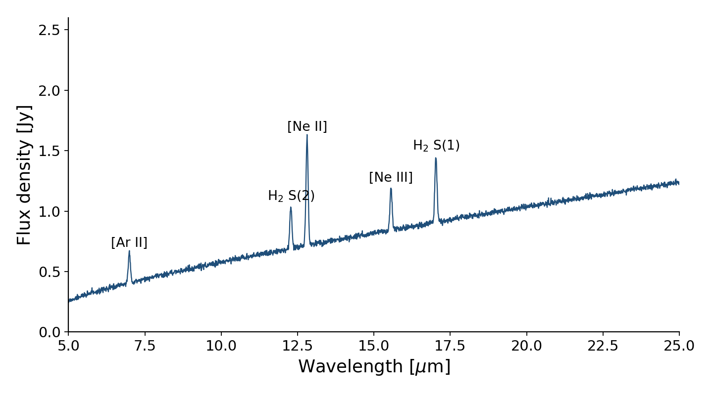

Reading the mid-infrared spectrum of a young star


Start with the question the project answers, written so that a physicist from another field can follow it. Then say what you did: the data or simulations, and the one idea that makes your approach work.
Finish with the result in a sentence or two, and why it matters. If there’s a paper, link it at the end: Your Name et al. 2026.